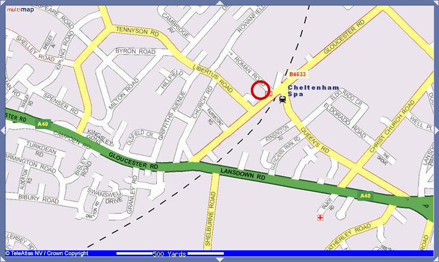
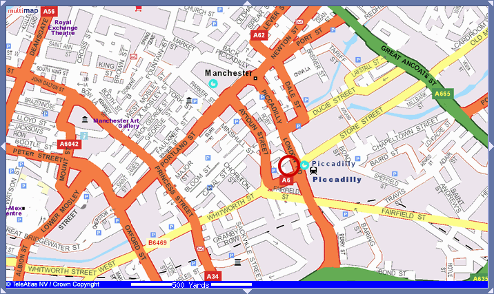
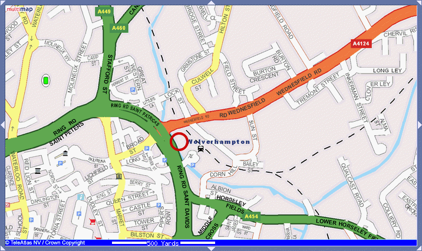

Matthew Somerville
LUGRadio Live
22nd July 2006
Maps are complicated things. Take railway station locations, for example.



It’s all open source, so help, bug reports and patches are very welcome. :-)
Matthew Somerville
matthew@mysociety.org
http://www.mysociety.org/volunteertasks
(our Open Source-d simple front end to cvstrac)